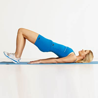

ေျခတံ သြယ္လ် လွပေအာင္

ဒူးေထာင္ျပီး လွဲပါ။ ေျခဖေနာင့္ကို ၾကမ္းျပင္နဲ႔ ထိထားျပီး ေျခဖ်ားေတြကိုေတာ့ အေပၚေျမွာက္ပါ။
ျပီးေနာက္ ေက်ာ၊ ခါး၊ တင္ ႏွင့္ ေပါင္ တို႔ကို တစ္ေျဖာင့္တည္း ျဖစ္သည္အထိ ေျမွာက္ပါ။
၁မိနစ္ ေလာက္ၾကာရင္ ျပန္ခ်ပါ။
ဒါမ်ိဳးကို ၁၅ ၾကိမ္ေလာက္ ျပဳလုပ္ပါ။